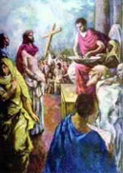
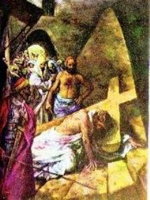

=1ª, 2ª e 3ª Estações=

PRIMEIRA ESTAÇÃO
"JESUS É CONDENADO À MORTE"
Estava definitivamente concretizado o mais absurdo e abominável processo de julgamento que se tem notícia, jamais igualado em sordidez, em torpeza e na vergonhosa baixeza de seus critérios, envolvendo testemunhas preparadas, com acusações falsas que conduziu à decisão condenatória.
Nós vos adoramos SENHOR JESUS e vos bendizemos! ( Ajoelhar)
 Porque pela Vossa Santa Cruz remistes o mundo! (
Levantar)
Porque pela Vossa Santa Cruz remistes o mundo! (
Levantar)
Judas Iscariotes traiu seu próprio amigo, entregando JESUS para ser preso. Os soldados agarraram o SENHOR e O levaram diante de Pilatos, para ser julgado. Apresentaram falsas acusações e influenciaram a multidão para pedir a condenação DELE à morte.
 E para agradar à multidão, Pilatos deixou que levassem JESUS para ser
crucificado.
E para agradar à multidão, Pilatos deixou que levassem JESUS para ser
crucificado.
O que aconteceu a JESUS está acontecendo hoje com as famílias. Poucas vozes se levantam para defender a instituição familiar. A "multidão", formada pela mentalidade do poder, da comunicação enganosa, vai desunindo as pessoas, jogando filhos contra os pais, na busca de auferir vantagens e em nome de uma liberdade que mata e escraviza e assim, vai crucificando as famílias.
 Em algumas famílias, os filhos saem de casa para procurar trabalho e escola.
Mas, em muitas famílias, jovens saem para
"experimentar a liberdade". E os pais sofrem com a falta
de juízo dos filhos, se entristecendo com as suas experiências ousadas e muitas vezes,
sentindo vergonha pela falta de dignidade e demonstração de total ausência de
princípios morais.
Em algumas famílias, os filhos saem de casa para procurar trabalho e escola.
Mas, em muitas famílias, jovens saem para
"experimentar a liberdade". E os pais sofrem com a falta
de juízo dos filhos, se entristecendo com as suas experiências ousadas e muitas vezes,
sentindo vergonha pela falta de dignidade e demonstração de total ausência de
princípios morais.
CANTO:
A morrer crucificado/ Teu JESUS é condenado/ Por teus crimes, pecador/ Por teus crimes, pecador.
Pela Virgem dolorosa/ Vossa MÃE tão piedosa/ Perdoai ó meu JESUS/ perdoai ó meu JESUS.


SEGUNDA ESTAÇÃO
"JESUS CARREGA A SUA CRUZ"
A Cruz é um antigo instrumento bárbaro de suplício, usado por vários povos para executar os condenados à morte. JESUS recebeu a sua Cruz, um grosso e pesado madeiro que apoiou em seu ombro.
Nós vos adoramos SENHOR JESUS e vos bendizemos! ( Ajoelhar)
 Porque pela Vossa Santa Cruz remistes o mundo! (
Levantar)
Porque pela Vossa Santa Cruz remistes o mundo! (
Levantar)
Diante de Pilatos, algumas pessoas gritavam em defesa de JESUS. Mas a multidão gritava mais forte, pedindo que ELE fosse crucificado! E a gritaria venceu!
 E JESUS saiu carregando a Cruz para o lugar chamado Calvário.
E JESUS saiu carregando a Cruz para o lugar chamado Calvário.
Quem faz maldade aos outros esquece rápido. Mas as vítimas da maldade terão que seguir pelo caminho da dor e do sofrimento. Quantas famílias são destruídas porque o pai ou a mãe decidiu abandonar o lar e seguir outro caminho! E a família segue com a pesada Cruz do abandono e muitas vezes até do empobrecimento.
 A felicidade não é encontrada por quem a busca só para si mesmo. A única
felicidade que se tem vem da que se dá. Se faço alguém feliz, eu também serei mais feliz.
A felicidade não é encontrada por quem a busca só para si mesmo. A única
felicidade que se tem vem da que se dá. Se faço alguém feliz, eu também serei mais feliz.
CANTO:
Com a Cruz é carregado/ E do peso, acabrunhado/ Vai morrer por teu amor/ Vai morrer por teu amor./
Pela Virgem dolorosa/ Vossa MÃE tão piedosa,/ perdoai ó meu JESUS/ perdoai ó meu JESUS./


TERCEIRA ESTAÇÃO
"JESUS CAI PELA PRIMEIRA VEZ"
Numa ladeira com degraus de pedra, ELE cai pela primeira vez, batendo com o joelho esquerdo forte contra o piso rústico, esfolando-o por causa do peso da Cruz. Os soldados que O escoltava, severos e cruéis, com os chicotes forçaram-no a levantar-se e continuar a caminhada.
Nós vos adoramos SENHOR JESUS e vos bendizemos! ( Ajoelhar)
 Porque pela Vossa Santa Cruz remistes o mundo! (
Levantar)
Porque pela Vossa Santa Cruz remistes o mundo! (
Levantar)
No inicio de sua missão JESUS disse: "O ESPÍRITO DO SENHOR está sobre Mim, porque ELE Me ungiu para evangelizar os pobres; enviou-Me para proclamar a remissão aos presos e aos cegos a recuperação da vista, para restituir a liberdade aos oprimidos, e para proclamar um ano de graça do SENHOR". (Lc 4,18-19)
No entanto, por causa da maldade das pessoas, ELE mesmo se tornou vítima da crueldade humana.
 Cansado e abatido pelo sofrimento, JESUS é empurrado pelos
soldados e cai por terra.
Cansado e abatido pelo sofrimento, JESUS é empurrado pelos
soldados e cai por terra.
Casar, constituir uma família, viver em paz, é o ideal que motiva os jovens ao casamento. Mas, muitos casais não estão preparados para enfrentar as dificuldades da vida. Diante dos primeiros problemas, brigam e se separam. A queda de JESUS nos ensina que a vida não é feita só com coisas boas. Existem as dificuldades no caminho. Mas, o importante é ter coragem de levantar depois das quedas e seguir em frente.
 Abençoai SENHOR, as nossas famílias. Ensinai-nos a perdoar as fraquezas
e as quedas de cada um, como o SENHOR perdoou tantas vezes os nossos pecados.
Ajudai-nos a caminhar juntos.
Abençoai SENHOR, as nossas famílias. Ensinai-nos a perdoar as fraquezas
e as quedas de cada um, como o SENHOR perdoou tantas vezes os nossos pecados.
Ajudai-nos a caminhar juntos.
CANTO:
Pela Cruz tão oprimido/ Cai JESUS desfalecido/ Pela tua salvação/ Pela tua salvação.
Pela Virgem dolorosa/ Vossa MÃE tão piedosa/ Perdoai ó meu JESUS/ Perdoai ó meu JESUS.